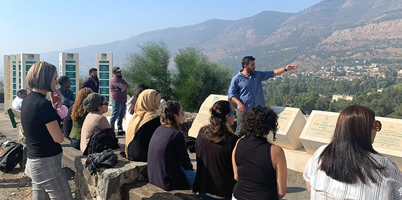
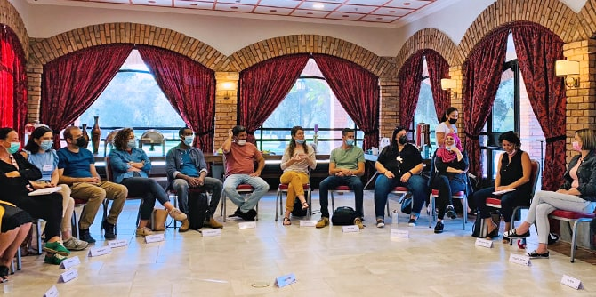

עם פתיחת
תוכנית מנדל למנהיגות חברתית בצפון יצאו 20 העמיתים הטריים לסמינר בן יומיים בקיבוץ כפר בלום. בין השאר שמעו העמיתים הרצאות מפי
ד"ר עומרי קסטלנובו בנושא השראה ומנהיגות, ומאת
פרופ' איתי בארי בנושא השלטון המקומי. לאחר הסמינר סיירו העמיתים במשך שלושה ימים באזור הצפון – כפתח ללימודי חקר הצפון אשר ילוו אותם לאורך שנת הלימודים. במהלך הסיורים הללו נפגשו עם בעלי תפקידים בכירים ברחבי הצפון והשתתפו בכנס לפיתוח הגליל שהתקיים בעכו.
תוכנית מנדל למנהיגות אזורית בצפון יצאה לדרך באמצע אוקטובר בסמינר בן יומיים בקיבוץ כפר גלעדי. הסמינר הוקדש להיכרות בין-אישית וכן להיכרות עם קרן מנדל-ישראל, עם תפיסותיה בנוגע לאזור הצפון ועם המנטורים שילוו את העמיתים באופן פרטני לאורך השנה. במהלך הסמינר פגשו העמיתים גם כמה מן המרצים שילמדו במהלך השנה.
תוכנית מנדל למנהיגות בשירות הציבורי בצפון יצאה לדרך באמצע אוקטובר. העמיתים הטריים יצאו לסמינר בן יומיים בקיבוץ כפר בלום ובמהלכו התפצלו לארבע קבוצות, לשם פעילות חקר הצפון בארבעה צירים מרכזיים – שלטון מקומי, בריאות, חינוך-השכלה, ותעסוקה-פיתוח כלכלי. את תוצרי החקר יציגו העמיתים לפני כלל הקבוצה בשבועות הקרובים.
אנו מאחלים לעמיתים החדשים שנה של בחינת שאלות על זהות, ערכים ומחויבות, שנה של יציאה מאזור הנוחות, ומתוך כך תהליך של צמיחה.

{kind=link}
{kind=link}